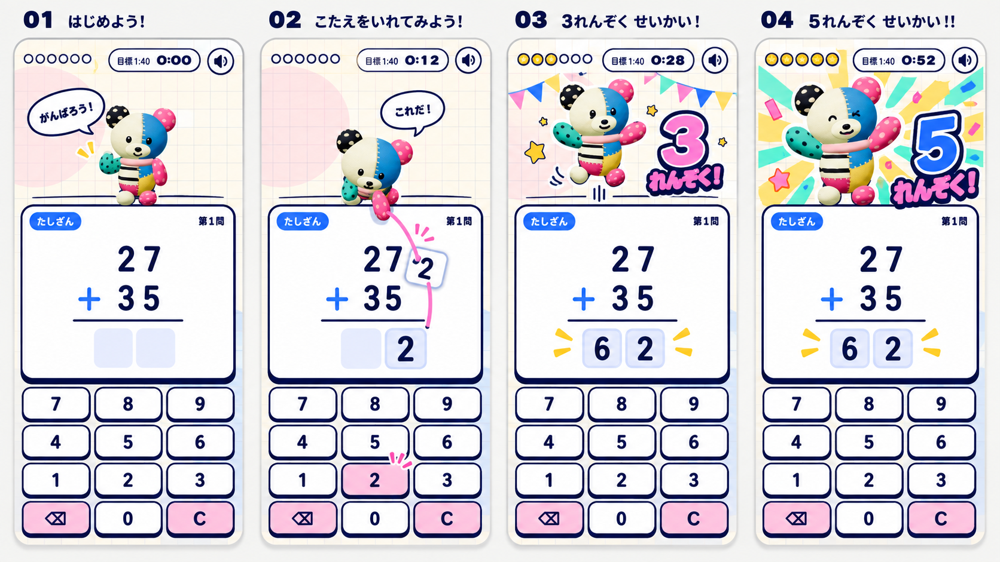

POKOMOKO / POP STUDY 01 / 2026.09.28
画面と音を、同じ12秒で比べる。
左は元動画の10.5〜22.5秒。右は「数字を運ぶ → 3連続 → あと1つ → 5連続」のデザイン試作です。
0.00 / 12.00
音：同じ位置で切替。比較用に参考側の再生音量を下げています。
参考 原寸430×860 / 等速
ぽこもこ版 同じ430×860 / 試作
準備中…
4場面を静止して見る
白い問題面、紺の短い影。元モデルのぽこもこだけに素材感を残す。
キー → 前足 → 解答欄。数字そのものが動き、接触に音を合わせる。
ためて跳ぶ。大きい数字と、舞台に残る旗。問題とキーは動かさない。
構図、色、和音が一緒に変わる。ピーク後も進行した状態が残る。
元動画の入力1回を追う
何を合わせたか
- 押した直後のキーの沈みと短い音。
- 数字を受け渡す前に、キャラが傾いて構える。
- 移動は始点・接点・終点を持つ。数字の残像は1つ。
- 着地で短い印と接触音。正解音は別に重ねる。
- 跳躍は沈む→伸びる→頂点→着地→戻りを分ける。
元動画の1.4秒と、右の12秒デモは別の観察範囲です。右は2連続から始まる固定3問の試作で、両者の学習速度を測る比較ではありません。
先に生成した4場面の絵コンテ

画像生成の時計・吹き出しは試作へ持ち込まず、ぽこもこは既存3Dモデル由来のポーズ画像へ戻しました。文字と盤面はコードで描いています。

動画は12秒を実時間で収録します。